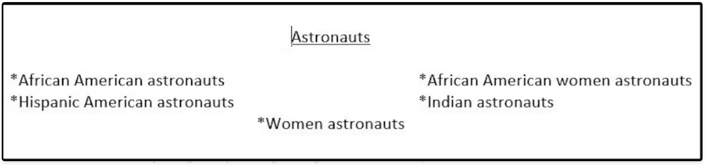
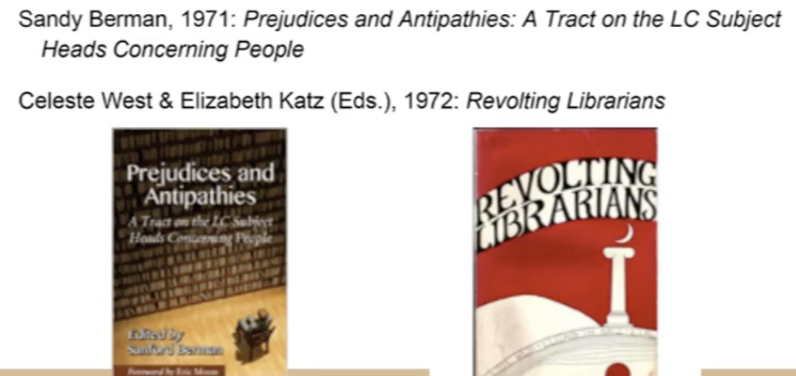
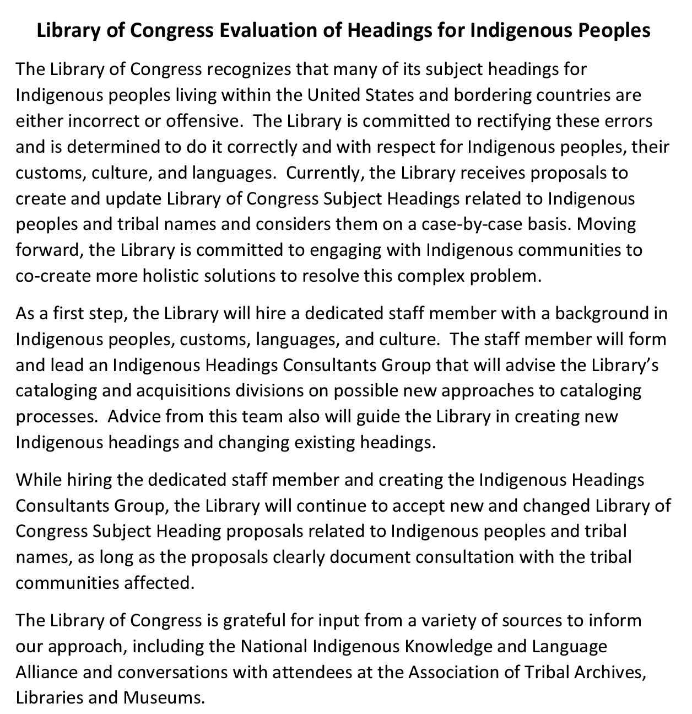
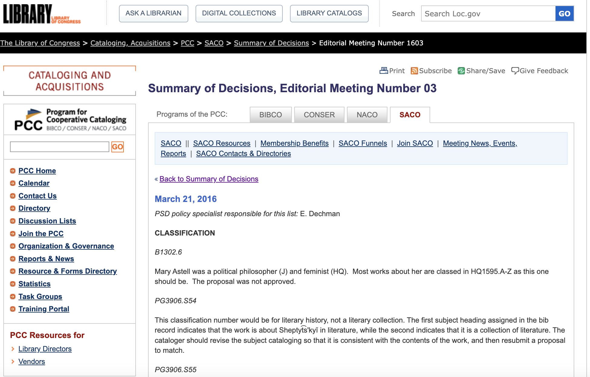
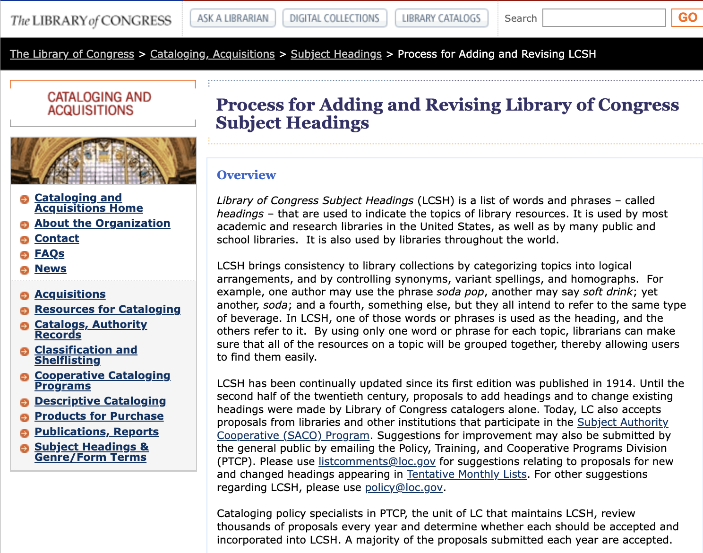
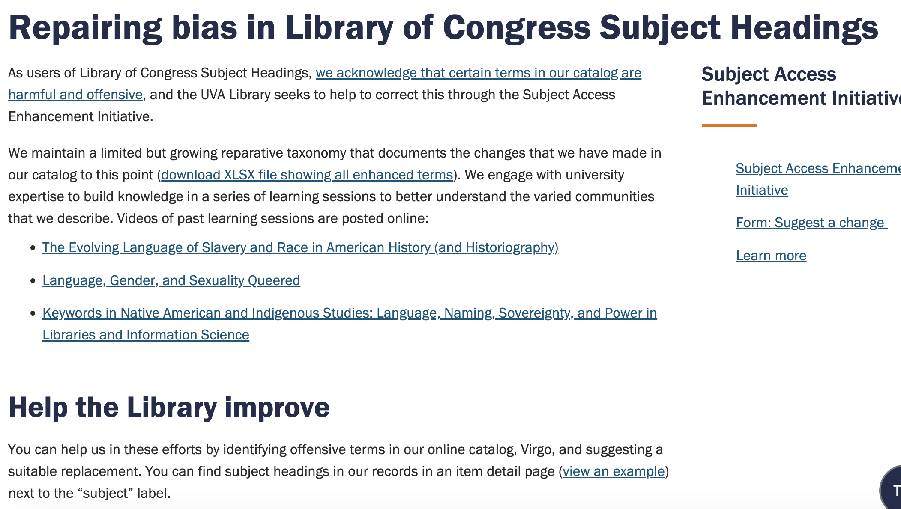
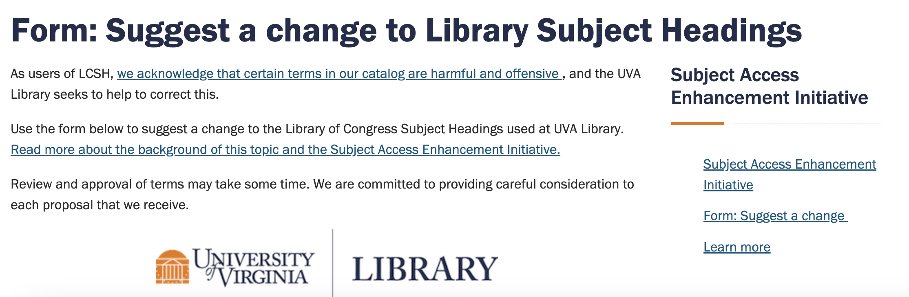

Module 6: Ethics, Diversity and Access Within Information Organization
LIS 5043: Organization of Information
Introduction
Overview
- Universal Design
- Designing systems that can be used and are useful for everyone
- Ethical Representation
- Choices catalogers make
- Ethical subject representation
- Standards that are based on understanding of users and how users interact with library catalog and catalog records
Excerpts from ALA Code of Ethics
Adopted June 28, 1997, by the ALA Council; amended January 22, 2008
Ethical dilemmas occur when values are in conflict. The American Library Association Code of Ethics states the values to which we are committed, and embodies the ethical responsibilities of the profession in this changing information environment.We significantly influence or control the selection, organization, preservation, and dissemination of information. In a political system grounded in an informed citizenry, we are members of a profession explicitly committed to intellectual freedom and the freedom of access to information.We have a special obligation to ensure the free flow of information and ideas to present and future generations.We provide the highest level of service to all library users
through appropriate and usefully organized resources; equitable service policies; equitable access; and accurate, unbiased, and courteous responses to all requests.We uphold the principles of intellectual freedom and resist all efforts to censor library resources.
ALCTS Supplement
Developed by the ALCTS Task Force on Professional Ethics; adopted by the ALCTS Board of Directors, Midwinter Meeting, February 7, 1994
- Guidelines for ALCTS Members to Supplement the American Library Association Code of Ethics, 1994
- The following guidelines are to assist ALCTS members in the interpretation and application of the ALA Code of Ethics as it applies to issues of concern to ALCTS.
- Within the context of the institution’s missions and programs and the needs of the user populations served by the library an ALCTS member:
- strives to develop a collection of materials within collection policies and priorities;
strives to provide broad and unbiased access to information;strives to preserve and conserve the materials in the library in accordance with established priorities and programs;
- develops resource sharing programs to extend and enhance the information sources available to library users;
ALCTS Supplement (Cont.)
promotes the development and application of standards and professional guidelines;- establishes a secure and safe environment for staff and users;
- fosters and promotes fair, ethical and legal trade and business practices; maintains equitable treatment and confidentiality in competitive relations and manuscript and grant reviews;
supports and abides by any contractual agreements made by the library or its home institution in regard to the provision of or access to information resources, acquisition of services, and financial arrangements.
Section 508
Summary of Section 508 Standards
- General - Technical Standards - Software applications and operating systems - Web-based intranet and internet information and systems - Telecommunication products - Video and multimedia products - Self contained, closed products - Desktop and portable computers - Functional Performance Criteria - Information, Documentation, and Support
Appendix A
- E101.1 Purpose. These Revised 508 Standards, which consist of 508 Chapters 1 and 2 (Appendix A), along with Chapters 3 through 7 (Appendix C), contain scoping and technical requirements for information and communication technology (ICT) to ensure accessibility and usability by individuals with disabilities. Compliance with these standards is mandatory for Federal agencies subject to Section 508 of the Rehabilitation Act of 1973, as amended (29 U.S.C. 794d)
Appendixes B and C
- C101.1 Purpose. These Revised 255 Guidelines, which consist of 255 Chapters 1 and 2 (Appendix B), along with Chapters 3 through 7 (Appendix C), contain scoping and technical requirements for the design, development, and fabrication of telecommunications equipment and customer premises equipment, content, and support documentation and services, to ensure accessibility and usability by individuals with disabilities. These Revised 255 Guidelines are to be applied to the extent required by regulations issued by the Federal Communications Commission under Section 255 of the Communications Act of 1934, as amended (47 U.S.C. 255).
Appendix C (Cont.)
- 601.1 Scope. The technical requirements in Chapter 6 shall apply to ICT support documentation and services where required by 508 Chapter 2 (Scoping Requirements), 255 Chapter 2 (Scoping Requirements), and where otherwise referenced in any other chapter of the Revised 508 Standards or Revised 255 Guidelines.
- 602 Support Documentation
- 602.1 General. Documentation that supports the use of ICT shall conform to 602.
- 602.2 Accessibility and Compatibility Features. Documentation shall list and explain how to use the accessibility and compatibility features required by Chapters 4 and 5. Documentation shall include accessibility features that are built-in and accessibility features that provide compatibility with assistive technology.
- 602.3 Electronic Support Documentation. Documentation in electronic format, including Web-based self-service support, shall conform to Level A and Level AA Success Criteria and Conformance Requirements in WCAG 2.0 (incorporated by reference, see 702.10.1).
- 602.4 Alternate Formats for Non-Electronic Support Documentation. Where support documentation is only provided in non-electronic formats, alternate formats usable by individuals with disabilities shall be provided upon request.
Ethical Representation
- Choices catalogers make
- Ethical subject representation
- Standards that are based on understanding of users and how users interact with library catalog and catalog records
Biases in LoC Subject Headings
- Language vocabularies do not include every langauge
- LOC does not represent marginalized groups of people
- Descriptive practices have been based on systems and standards ingrained with white supremacy, misogyny, and homophobia
- Much of this descriptive work contains insensitive, outdated, or inappropriate language that reflects the harmful biases built into descriptive systems
- From POV - white, male, christian, heterosexual, cisgender
- Historical bias, unconscious bias, combination of purposeful and unpurposeful bias
- Homosaurus term
Bias Hiding in Your Library
The ‘straight white American man’ assumption
Without gender, race or geographic qualifications, “Astronauts” can be assumed to mean white American men in terms of library subjects
Bias Hiding in Your Library
Nurses were divided equitably for both Male and Female
Under Prostitutes, there was only “Male prostitute” SH, revealing the generic assumption that most prostitutes are female
Official Library of Congress subject headings for three professions traditionally perceived as female. Amanda Ros. CC BY
Beginning of Change
Critical Theory
- Feminist Theory; Social Influences - Hope Olson (1990s-present)
- Critical Race Theory - Jonathan Furner (2000s)
- “Three Decades Since Prejudice and Antipathies: A Study of Changes in the Library of Congress Subject Headings” - Steven Knowlton
- Queer Theory - Emily Drabinski (2010s) [Currently President of the American Library Association (ALA)]
Representation in LOC
Absence/Incomplete
- LQBTIQA+
- Gender
- Racial categories
- races have been named by dominant group (white)
- Indigenous People
- broad and inaccurate subject term
- Western bias
Some Positive Changes in LOC SH
Ethnicity
In late 1970s, “
Afro-Americans” replaced “Negroes”This was in turn replaced by “
African Americans” or “Blacks” in 2000
Medical Condition
- In 2001, “
People with mental disabilities” replaced “Mentally handicapped” and “Retarded persons”
Gender
Gender identity is also an area where positive changes have been made
LGBT subjects have been distinguished and classed under
“Sexual minorities”since 1972, rather than being under the subject “Sexual deviations”. “Sexual deviations” does not even exist as a subject heading anymoreIn December, the Library of Congress changed the broader term from “sexual minorities” to simply “
persons”
Efforts by Library of Congress
Efforts by Library of Congress
Efforts by Library of Congress
Efforts by Library of Congress
Efforts by Libraries
Libraries are making efforts to redress this problematic history
Statement on Harmful Language in Cataloging and Archival Description by University of Virginia Library
They are actively removing the harmful language in their legacy records
They acknowledge that many LCSH headings are biased and harmful
They are supporting efforts underway throughout the profession to change these terms, and are also taking a localized approach to replacing some harmful and racist terms with acceptable local headings in their own catalog
When describing some archival collections, they include a brief note to patrons alerting them to harmful or pejorative language
Efforts by Libraries
 